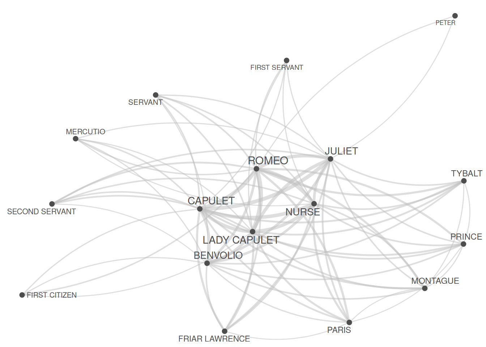
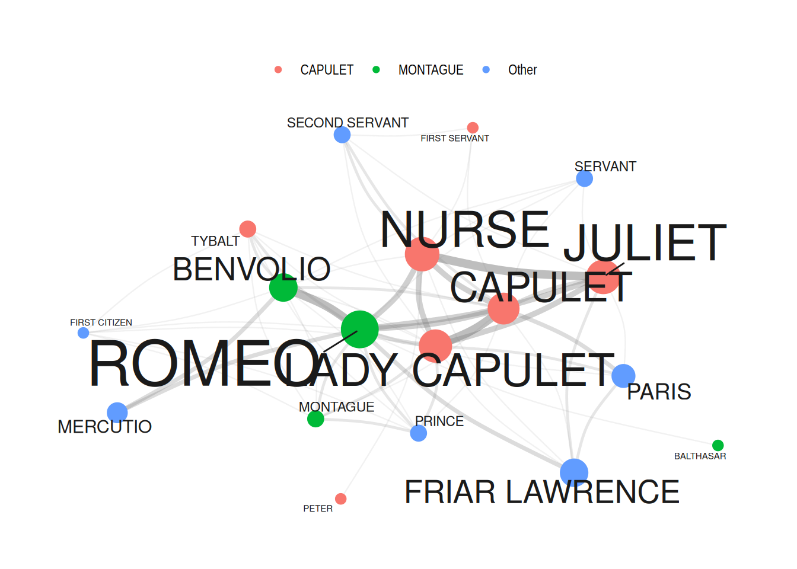

# install packages
install.packages("flextable")
install.packages("GGally")
install.packages("ggraph")
install.packages("igraph")
install.packages("Matrix")
install.packages("network")
install.packages("quanteda")
install.packages("sna")
install.packages("tidygraph")
install.packages("tidyverse")
install.packages("tm")
install.packages("tibble")
install.packages("quanteda.textplots")
# install klippy for copy-to-clipboard button in code chunks
install.packages("remotes")
remotes::install_github("rlesur/klippy")Network Analysis using R

Introduction

This tutorial serves as an introduction to network analysis in R using the quanteda(Benoit et al. 2018), igraph (Csardi and Nepusz 2006), tidygraph (Pedersen 2024b), and ggraph (Pedersen 2024a) packages.
Networks are a powerful method for visualizing relationships among various elements, such as authors, characters, or words. Network analysis goes beyond mere visualization; it’s a technique for uncovering patterns and structures within complex systems. In essence, network analysis represents relationships as nodes (elements) connected by edges (relationships) which provides a unique perspective for understanding the connections and interactions within your data.
Geared towards beginners and intermediate users of R, this tutorial aims to showcase how to perform network analysis based on textual data and it shows how to visualize networks using R. The primary goal is not to deliver a fully-fledged analysis but rather to demonstrate and exemplify selected useful methods associated with network analysis. This tutorial delves into creating and modifying network graphs, allowing users to explore and compare their statistical properties. By the end, you’ll not only grasp the basics of network analysis but also gain insights into leveraging statistical measures for a more comprehensive understanding of your data.
The entire R markdown document for the sections below can be downloaded here. If you want to render the Rmarkdown notebook on your machine, i.e. knitting the document to a html or pdf file, you need to make sure that you have R installed and you also need to download the bibliography file and store it in the same folder where you store the Rmd file.

Click here to open a Jupyter notebook that allows you to follow this tutorial interactively. This means that you can execute, change, and edit the code used in this tutorial to help you better understand how the code shown here works (make sure you run all code chunks in the order in which they appear - otherwise you will get an error).
LADAL TOOL

Click here to open an notebook-based tool
that allows you upload your own data, create a network, and download the resulting visualization of the network.
This tutorial builds on a tutorial on plotting collocation networks by Guillaume Desagulier, a tutorial on network analysis by offered by Alice Miller from the Digital Observatory at the Queensland University of Technology, and this tutorial by Andreas Niekler and Gregor Wiedemann.
What is Network Analysis?
The most common way to visualize relationships between entities is through networks (Silge and Robinson, 131–37). Networks, also known as graphs, are powerful tools that represent relationships among entities. They consist of nodes (often depicted as dots) and edges (typically represented as lines) and can be categorized as directed or undirected networks.
- In directed networks, the direction of edges is captured, signifying the flow or relationship from one node to another. An example of a directed network is the trade relationships between countries, where arrows on the edges indicate the direction of exports. The thickness of these arrows can also encode additional information, such as the frequency or strength of the relationship.
- Undirected networks, on the other hand, represent symmetric relationships where the connection between two nodes is mutual. For example, in a social network, the connections between individuals are often undirected, as the relationship between friends is reciprocal.
Network analysis involves exploring the structure and properties of these networks. One key concept is centrality, which identifies the most important nodes in a network. Centrality metrics, such as degree centrality (number of connections) and betweenness centrality (importance in connecting other nodes), help unveil the significance of specific nodes.
In R, there are several packages that provide essential tools for constructing, analyzing, and visualizing networks but here, we will focus on the quanteda.textplots, igraph, tidygraph, and ggraph packages. To showcase how to prepare and generate network graphs, we will visualize the network that the characters in William Shakespeare’s Romeo and Juliet form.
Preparation and session set up
Certainly! Here’s a corrected and improved version of the passage:
This tutorial is built with and uses R (the R programming language). If you haven’t installed R or are new to it, you can find an introduction and more information on how to use R here. In order to execute the scripts and code chunks presented in this tutorial without errors, we need to install specific packages from the R library. Prior to delving into the code below, please install the required packages by running the code provided in this paragraph. If you’ve already installed the mentioned packages, feel free to skip ahead and disregard this section. To install the necessary packages, execute the following code. Note that it may take some time (between 1 and 5 minutes) to install all the libraries, so don’t worry if it takes a little while.
Next, we load the packages.
# activate packages
library(flextable)
library(GGally)
library(ggraph)
library(gutenbergr)
library(igraph)
library(Matrix)
library(network)
library(quanteda)
library(sna)
library(tidygraph)
library(tidyverse)
library(tm)
library(tibble)
# activate klippy for copy-to-clipboard button
klippy::klippy()Once you have installed R, RStudio, and have also initiated the session by executing the code shown above, you are good to go.
Data preparation
In network analysis, it’s crucial to have at least one table indicating the start and end points of edges (lines connecting nodes). Additionally, two additional tables providing information on node size/type and edge size/type are valuable. In the upcoming sections, we’ll create these tables from raw data. Alternatively, you can generate network graphs by uploading tables containing the necessary information.
We’ll generate a network showing the frequency of characters in William Shakespeare’s Romeo and Juliet appearing in the same scene. Our focus is on investigating the networks of personas in Shakespeare’s Romeo and Juliet, and thus, we’ll load this renowned work of fiction.
Creating a matrix
We start by loading the data which represents a table that contains the personas that are present during a sub-scene as well as how many contributions they make and how often they occur.
# load data
net_dat <- read.delim("tutorials/net/data/romeo_tidy.txt", sep = "\t")actscene | person | contrib | occurrences |
|---|---|---|---|
ACT I_SCENE I | BENVOLIO | 24 | 7 |
ACT I_SCENE I | CAPULET | 2 | 9 |
ACT I_SCENE I | FIRST CITIZEN | 1 | 2 |
ACT I_SCENE I | LADY CAPULET | 1 | 10 |
ACT I_SCENE I | MONTAGUE | 6 | 3 |
ACT I_SCENE I | PRINCE | 1 | 3 |
ACT I_SCENE I | ROMEO | 16 | 14 |
ACT I_SCENE I | TYBALT | 2 | 3 |
ACT I_SCENE II | BENVOLIO | 5 | 7 |
ACT I_SCENE II | CAPULET | 3 | 9 |
ACT I_SCENE II | PARIS | 2 | 5 |
ACT I_SCENE II | ROMEO | 11 | 14 |
ACT I_SCENE II | SERVANT | 8 | 3 |
ACT I_SCENE III | JULIET | 5 | 11 |
ACT I_SCENE III | LADY CAPULET | 11 | 10 |
We now transform that table into a co-occurrence matrix.
net_cmx <- crossprod(table(net_dat[1:2]))
diag(net_cmx) <- 0
net_df <- as.data.frame(net_cmx)Persona | BALTHASAR | BENVOLIO | CAPULET | FIRST CITIZEN | FIRST SERVANT |
|---|---|---|---|---|---|
BALTHASAR | 0 | 0 | 1 | 0 | 0 |
BENVOLIO | 0 | 0 | 3 | 2 | 1 |
CAPULET | 1 | 3 | 0 | 1 | 2 |
FIRST CITIZEN | 0 | 2 | 1 | 0 | 0 |
FIRST SERVANT | 0 | 1 | 2 | 0 | 0 |
The data shows how often a character has appeared with each other character in the play - only Friar Lawrence and Friar John were excluded because they only appear in one scene where they talk to each other.
Network Visualization
There are various different ways to visualize a network structure. We will focus on two packages for network visualization here and exemplify how you can visualize networks in R.
Quanteda Networks
The quanteda package contains many very useful functions for analyzing texts. Among these functions is the textplot_network function which provides a very handy way to display networks. The advantage of the network plots provided by or generated with the quanteda package is that you can create them with very little code. However, this comes at a cost as these visualizations cannot be modified easily (which means that their design is not very flexible compared to other methods for generating network visualizations).
In a first step, we transform the text vectors of the romeo data into a document-feature matrix using the dfm function.
# create a document feature matrix
net_dfm <- quanteda::as.dfm(net_df)
# create feature co-occurrence matrix
net_fcm <- quanteda::fcm(net_dfm, tri = F)
# inspect data
head(net_fcm)Feature co-occurrence matrix of: 6 by 18 features.
features
features BALTHASAR BENVOLIO CAPULET FIRST CITIZEN FIRST SERVANT
BALTHASAR 1 25 31 11 6
BENVOLIO 25 39 93 39 27
CAPULET 31 93 65 42 39
FIRST CITIZEN 11 39 42 6 10
FIRST SERVANT 6 27 39 10 3
FRIAR LAWRENCE 20 53 74 18 17
features
features FRIAR LAWRENCE JULIET LADY CAPULET MERCUTIO MONTAGUE
BALTHASAR 20 26 31 11 17
BENVOLIO 53 87 99 42 55
CAPULET 74 131 117 52 65
FIRST CITIZEN 18 32 36 24 29
FIRST SERVANT 17 40 42 12 15
FRIAR LAWRENCE 15 61 72 23 32
[ reached max_nfeat ... 8 more features ]This feature-co-occurrence matrix can then serve as the input for the textplot_network function which already generates a nice network graph.
Now we generate a network graph using the textplot_network function from the quanteda.textplots package. This function has the following arguments:
x: a fcm or dfm object
min_freq: a frequency count threshold or proportion for co-occurrence frequencies of features to be included (default = 0.5),
omit_isolated: if TRUE, features do not occur more frequent than min_freq will be omitted (default = TRUE),
edge_color: color of edges that connect vertices (default = “#1F78B4”),edge_alpha: opacity of edges ranging from 0 to 1.0 (default = 0.5),edge_size: size of edges for most frequent co-occurrence (default = 2),vertex_color: color of vertices (default = “#4D4D4D”),vertex_size: size of vertices (default = 2),vertex_labelcolor: color of texts. Defaults to the same as vertex_color,vertex_labelfont: font-family of texts,vertex_labelsize: size of vertex labels in mm. Defaults to size 5. Supports both integer values and vector values (default = 5),offset: if NULL (default), the distance between vertices and texts are determined automatically,
quanteda.textplots::textplot_network(
x = net_fcm, # a fcm or dfm object
min_freq = 0.5, # frequency count threshold or proportion for co-occurrence frequencies (default = 0.5)
edge_alpha = 0.5, # opacity of edges ranging from 0 to 1.0 (default = 0.5)
edge_color = "gray", # color of edges that connect vertices (default = "#1F78B4")
edge_size = 2, # size of edges for most frequent co-occurrence (default = 2)
# calculate the size of vertex labels for the network plot
vertex_labelsize = net_dfm %>%
# convert the dfm object to a data frame
quanteda::convert(to = "data.frame") %>%
# exclude the 'doc_id' column
dplyr::select(-doc_id) %>%
# calculate the sum of row values for each row
rowSums() %>%
# apply the natural logarithm to the resulting sums
log(),
vertex_color = "#4D4D4D", # color of vertices (default = "#4D4D4D")
vertex_size = 2 # size of vertices (default = 2)
)
We now turn to generating tidy networks with is more complex but also offers more flexibility and options for customization.
Tidy Networks
We now turn to a different method for generating networks that is extremely flexible.
First, we define the nodes and we can also add information about the nodes that we can use later on (such as frequency information).
# create a new data frame 'va' using the 'net_dat' data
net_dat %>%
# rename the 'person' column to 'node' and 'occurrences' column to 'n'
dplyr::rename(
node = person,
n = occurrences
) %>%
# group the data by the 'node' column
dplyr::group_by(node) %>%
# summarize the data, calculating the total occurrences ('n') for each 'node'
dplyr::summarise(n = sum(n)) -> vanode | n |
|---|---|
BALTHASAR | 4 |
BENVOLIO | 49 |
CAPULET | 81 |
FIRST CITIZEN | 4 |
FIRST SERVANT | 4 |
FRIAR LAWRENCE | 49 |
JULIET | 121 |
LADY CAPULET | 100 |
MERCUTIO | 16 |
MONTAGUE | 9 |
NURSE | 121 |
PARIS | 25 |
PETER | 4 |
PRINCE | 9 |
ROMEO | 196 |
SECOND SERVANT | 9 |
SERVANT | 9 |
TYBALT | 9 |
The next part is optional but it can help highlight important information. We add a column with additional information to our nodes table.
# define family
mon <- c("ABRAM", "BALTHASAR", "BENVOLIO", "LADY MONTAGUE", "MONTAGUE", "ROMEO")
cap <- c("CAPULET", "CAPULET’S COUSIN", "FIRST SERVANT", "GREGORY", "JULIET", "LADY CAPULET", "NURSE", "PETER", "SAMPSON", "TYBALT")
oth <- c("APOTHECARY", "CHORUS", "FIRST CITIZEN", "FIRST MUSICIAN", "FIRST WATCH", "FRIAR JOHN", "FRIAR LAWRENCE", "MERCUTIO", "PAGE", "PARIS", "PRINCE", "SECOND MUSICIAN", "SECOND SERVANT", "SECOND WATCH", "SERVANT", "THIRD MUSICIAN")
# create color vectors
va <- va %>%
dplyr::mutate(type = dplyr::case_when(
node %in% mon ~ "MONTAGUE",
node %in% cap ~ "CAPULET",
TRUE ~ "Other"
))
# inspect updates nodes table
va# A tibble: 18 × 3
node n type
<chr> <int> <chr>
1 BALTHASAR 4 MONTAGUE
2 BENVOLIO 49 MONTAGUE
3 CAPULET 81 CAPULET
4 FIRST CITIZEN 4 Other
5 FIRST SERVANT 4 CAPULET
6 FRIAR LAWRENCE 49 Other
7 JULIET 121 CAPULET
8 LADY CAPULET 100 CAPULET
9 MERCUTIO 16 Other
10 MONTAGUE 9 MONTAGUE
11 NURSE 121 CAPULET
12 PARIS 25 Other
13 PETER 4 CAPULET
14 PRINCE 9 Other
15 ROMEO 196 MONTAGUE
16 SECOND SERVANT 9 Other
17 SERVANT 9 Other
18 TYBALT 9 CAPULET node | n | type |
|---|---|---|
BALTHASAR | 4 | MONTAGUE |
BENVOLIO | 49 | MONTAGUE |
CAPULET | 81 | CAPULET |
FIRST CITIZEN | 4 | Other |
FIRST SERVANT | 4 | CAPULET |
FRIAR LAWRENCE | 49 | Other |
JULIET | 121 | CAPULET |
LADY CAPULET | 100 | CAPULET |
MERCUTIO | 16 | Other |
MONTAGUE | 9 | MONTAGUE |
NURSE | 121 | CAPULET |
PARIS | 25 | Other |
PETER | 4 | CAPULET |
PRINCE | 9 | Other |
ROMEO | 196 | MONTAGUE |
Now, we define the edges, i.e., the connections between nodes and, again, we can add information in separate variables that we can use later on.
# create a new data frame 'ed' using the 'dat' data
ed <- net_df %>%
# add a new column 'from' with row names
dplyr::mutate(from = rownames(.)) %>%
# reshape the data from wide to long format using 'gather'
tidyr::gather(to, n, BALTHASAR:TYBALT) %>%
# remove zero frequencies
dplyr::filter(n != 0)from | to | n |
|---|---|---|
CAPULET | BALTHASAR | 1 |
FRIAR LAWRENCE | BALTHASAR | 1 |
JULIET | BALTHASAR | 1 |
LADY CAPULET | BALTHASAR | 1 |
MONTAGUE | BALTHASAR | 1 |
PARIS | BALTHASAR | 1 |
PRINCE | BALTHASAR | 1 |
ROMEO | BALTHASAR | 2 |
CAPULET | BENVOLIO | 3 |
FIRST CITIZEN | BENVOLIO | 2 |
FIRST SERVANT | BENVOLIO | 1 |
JULIET | BENVOLIO | 1 |
LADY CAPULET | BENVOLIO | 2 |
MERCUTIO | BENVOLIO | 4 |
MONTAGUE | BENVOLIO | 2 |
Now that we have generated tables for the edges and the nodes, we can generate a graph object.
ig <- igraph::graph_from_data_frame(d = ed, vertices = va, directed = FALSE)We will also add labels to the nodes as follows:
tg <- tidygraph::as_tbl_graph(ig) %>%
tidygraph::activate(nodes) %>%
dplyr::mutate(label = name)When we now plot our network, it looks as shown below.
# set seed (so that the exact same network graph is created every time)
set.seed(12345)
# create a graph using the 'tg' data frame with the Fruchterman-Reingold layout
tg %>%
ggraph::ggraph(layout = "fr") +
# add arcs for edges with various aesthetics
geom_edge_arc(
colour = "gray50",
lineend = "round",
strength = .1,
aes(
edge_width = ed$n,
alpha = ed$n
)
) +
# add points for nodes with size based on log-transformed 'v.size' and color based on 'va$Family'
geom_node_point(
size = log(va$n) * 2,
aes(color = va$type)
) +
# add text labels for nodes with various aesthetics
geom_node_text(aes(label = name),
repel = TRUE,
point.padding = unit(0.2, "lines"),
size = sqrt(va$n),
colour = "gray10"
) +
# adjust edge width and alpha scales
scale_edge_width(range = c(0, 2.5)) +
scale_edge_alpha(range = c(0, .3)) +
# set graph background color to white
theme_graph(background = "white") +
# adjust legend position to the top
theme(
legend.position = "top",
# suppress legend title
legend.title = element_blank()
) +
# remove edge width and alpha guides from the legend
guides(
edge_width = FALSE,
edge_alpha = FALSE
)
Network Statistics
In addition to visualizing networks, we will analyze the network and extract certain statistics about the network that tell us about structural properties of networks.
To extract the statistics, we use the edge object generated above (called ed) and then repeat each combination as often as it occurred based on the value in the Frequency column.
dg <- ed[rep(seq_along(ed$n), ed$n), 1:2]
rownames(dg) <- NULLThe resulting object (dg) looks as shown below.
from | to |
|---|---|
CAPULET | BALTHASAR |
FRIAR LAWRENCE | BALTHASAR |
JULIET | BALTHASAR |
LADY CAPULET | BALTHASAR |
MONTAGUE | BALTHASAR |
PARIS | BALTHASAR |
PRINCE | BALTHASAR |
ROMEO | BALTHASAR |
ROMEO | BALTHASAR |
CAPULET | BENVOLIO |
CAPULET | BENVOLIO |
CAPULET | BENVOLIO |
FIRST CITIZEN | BENVOLIO |
FIRST CITIZEN | BENVOLIO |
FIRST SERVANT | BENVOLIO |
Degree centrality
We now generate an edge list from the dg object and then extract the degree centrality. The degree centrality reflects how many edges each node has with the most central node having the highest value.
dgg <- graph.edgelist(as.matrix(dg), directed = T)
# extract degree centrality
igraph::degree(dgg) %>%
as.data.frame() %>%
tibble::rownames_to_column("node") %>%
dplyr::rename(`degree centrality` = 2) %>%
dplyr::arrange(-`degree centrality`) -> dc_tblnode | degree centrality |
|---|---|
ROMEO | 108 |
CAPULET | 92 |
LADY CAPULET | 90 |
NURSE | 76 |
JULIET | 72 |
BENVOLIO | 68 |
MONTAGUE | 44 |
PRINCE | 44 |
TYBALT | 44 |
PARIS | 42 |
FRIAR LAWRENCE | 40 |
SECOND SERVANT | 32 |
MERCUTIO | 30 |
SERVANT | 30 |
FIRST CITIZEN | 28 |
Central node
Next, we extract the most central node.
names(igraph::degree(dgg))[which(igraph::degree(dgg) == max(igraph::degree(dgg)))][1] "ROMEO"Betweenness centrality
We now extract the betweenness centrality. Betweenness centrality provides a measure of how important nodes are for information flow between nodes in a network. The node with the highest betweenness centrality creates the shortest paths in the network. The higher a node’s betweenness centrality, the more important it is for the efficient flow of goods in a network.
igraph::betweenness(dgg) %>%
as.data.frame() %>%
tibble::rownames_to_column("node") %>%
dplyr::rename(`betweenness centrality` = 2) %>%
dplyr::arrange(-`betweenness centrality`) -> bc_tblnode | betweenness centrality |
|---|---|
ROMEO | 27.62437026 |
LADY CAPULET | 16.27686423 |
CAPULET | 15.62321868 |
BENVOLIO | 9.61512099 |
NURSE | 7.40145363 |
JULIET | 5.55471008 |
TYBALT | 3.19940849 |
MONTAGUE | 2.18220323 |
PRINCE | 2.18220323 |
PARIS | 1.85942942 |
FRIAR LAWRENCE | 1.09118044 |
MERCUTIO | 0.84421390 |
PETER | 0.26841707 |
SERVANT | 0.23874480 |
FIRST CITIZEN | 0.03846154 |
We now extract the node with the highest betweenness centrality.
names(igraph::betweenness(dgg))[which(igraph::betweenness(dgg) == max(igraph::betweenness(dgg)))][1] "ROMEO"Closeness
In addition, we extract the closeness statistic of all edges in the dg object by using the closeness function from the igraph package. Closeness centrality refers to the shortest paths between nodes. The distance between two nodes represents the length of the shortest path between them. The closeness of a node is the average distance from that node to all other nodes.
igraph::closeness(dgg) %>%
as.data.frame() %>%
tibble::rownames_to_column("node") %>%
dplyr::rename(closeness = 2) %>%
dplyr::arrange(-closeness) -> c_tblnode | closeness |
|---|---|
LADY CAPULET | 0.05882353 |
ROMEO | 0.05882353 |
CAPULET | 0.05555556 |
BENVOLIO | 0.05263158 |
JULIET | 0.05000000 |
NURSE | 0.04761905 |
TYBALT | 0.04761905 |
MONTAGUE | 0.04545455 |
PARIS | 0.04545455 |
PRINCE | 0.04545455 |
FRIAR LAWRENCE | 0.04166667 |
SERVANT | 0.04166667 |
FIRST SERVANT | 0.04000000 |
MERCUTIO | 0.04000000 |
SECOND SERVANT | 0.04000000 |
We now extract the node with the highest closeness.
names(igraph::closeness(dgg))[which(igraph::closeness(dgg) == max(igraph::closeness(dgg)))][1] "LADY CAPULET" "ROMEO" We have reached the end of this tutorial and you now know how to create and modify networks in R and how you can highlight aspects of your data.
Citation & Session Info
Schweinberger, Martin. 2024. Network Analysis using R. Brisbane: The University of Queensland. url: https://ladal.edu.au/tutorials/net.html (Version 2024.04.24).
@manual{schweinberger2024net,
author = {Schweinberger, Martin},
title = {Network Analysis using R},
note = {tutorials/net/net.html},
year = {2024},
organization = "The University of Queensland, Australia. School of Languages and Cultures},
address = {Brisbane},
edition = {2024.04.24}
}sessionInfo()R version 4.4.2 (2024-10-31)
Platform: x86_64-pc-linux-gnu
Running under: Ubuntu 24.04.1 LTS
Matrix products: default
BLAS: /usr/lib/x86_64-linux-gnu/blas/libblas.so.3.12.0
LAPACK: /usr/lib/x86_64-linux-gnu/lapack/liblapack.so.3.12.0
locale:
[1] LC_CTYPE=en_US.UTF-8 LC_NUMERIC=C
[3] LC_TIME=en_US.UTF-8 LC_COLLATE=en_US.UTF-8
[5] LC_MONETARY=en_US.UTF-8 LC_MESSAGES=en_US.UTF-8
[7] LC_PAPER=en_US.UTF-8 LC_NAME=C
[9] LC_ADDRESS=C LC_TELEPHONE=C
[11] LC_MEASUREMENT=en_US.UTF-8 LC_IDENTIFICATION=C
time zone: Australia/Brisbane
tzcode source: system (glibc)
attached base packages:
[1] stats graphics grDevices datasets utils methods base
other attached packages:
[1] tm_0.7-15 NLP_0.3-2 lubridate_1.9.4
[4] forcats_1.0.0 stringr_1.5.1 dplyr_1.1.4
[7] purrr_1.0.2 readr_2.1.5 tidyr_1.3.1
[10] tibble_3.2.1 tidyverse_2.0.0 tidygraph_1.3.1
[13] sna_2.8 statnet.common_4.10.0 quanteda_4.1.0
[16] network_1.19.0 Matrix_1.7-2 igraph_2.1.2
[19] gutenbergr_0.2.4 ggraph_2.2.1 GGally_2.2.1
[22] ggplot2_3.5.1 flextable_0.9.7
loaded via a namespace (and not attached):
[1] tidyselect_1.2.1 viridisLite_0.4.2 farver_2.1.2
[4] viridis_0.6.5 fastmap_1.2.0 tweenr_2.0.3
[7] fontquiver_0.2.1 digest_0.6.37 timechange_0.3.0
[10] lifecycle_1.0.4 magrittr_2.0.3 compiler_4.4.2
[13] rlang_1.1.5 tools_4.4.2 utf8_1.2.4
[16] yaml_2.3.10 data.table_1.16.4 knitr_1.49
[19] labeling_0.4.3 askpass_1.2.1 stopwords_2.3
[22] graphlayouts_1.2.1 htmlwidgets_1.6.4 plyr_1.8.9
[25] xml2_1.3.6 RColorBrewer_1.1-3 klippy_0.0.0.9500
[28] withr_3.0.2 grid_4.4.2 polyclip_1.10-7
[31] gdtools_0.4.1 colorspace_2.1-1 scales_1.3.0
[34] MASS_7.3-64 cli_3.6.3 rmarkdown_2.29
[37] ragg_1.3.3 generics_0.1.3 tzdb_0.4.0
[40] quanteda.textplots_0.95 cachem_1.1.0 ggforce_0.4.2
[43] assertthat_0.2.1 parallel_4.4.2 vctrs_0.6.5
[46] slam_0.1-55 jsonlite_1.8.9 fontBitstreamVera_0.1.1
[49] hms_1.1.3 ggrepel_0.9.6 systemfonts_1.1.0
[52] glue_1.8.0 ggstats_0.7.0 codetools_0.2-20
[55] stringi_1.8.4 gtable_0.3.6 munsell_0.5.1
[58] pillar_1.10.1 htmltools_0.5.8.1 openssl_2.3.0
[61] R6_2.5.1 textshaping_0.4.1 evaluate_1.0.3
[64] lattice_0.22-6 memoise_2.0.1 renv_1.0.11
[67] fontLiberation_0.1.0 Rcpp_1.0.13-1 zip_2.3.1
[70] uuid_1.2-1 fastmatch_1.1-4 coda_0.19-4.1
[73] gridExtra_2.3 officer_0.6.7 xfun_0.49
[76] pkgconfig_2.0.3 References
Benoit, Kenneth, Kohei Watanabe, Haiyan Wang, Paul Nulty, Adam Obeng, Stefan Müller, and Akitaka Matsuo. 2018. “Quanteda: An r Package for the Quantitative Analysis of Textual Data.” Journal of Open Source Software 3 (30): 774. https://doi.org/10.21105/joss.00774.
Csardi, Gabor, and Tamas Nepusz. 2006. “The Igraph Software Package for Complex Network Research.” InterJournal Complex Systems: 1695. https://igraph.org.
Pedersen, Thomas Lin. 2024a. Ggraph: An Implementation of Grammar of Graphics for Graphs and Networks. https://CRAN.R-project.org/package = ggraph.
———. 2024b. Tidygraph: A Tidy API for Graph Manipulation. https://CRAN.R-project.org/package = tidygraph.
Silge, Julia, and David Robinson. Text Mining with r: A Tidy Approach. " O’Reilly Media, Inc.".